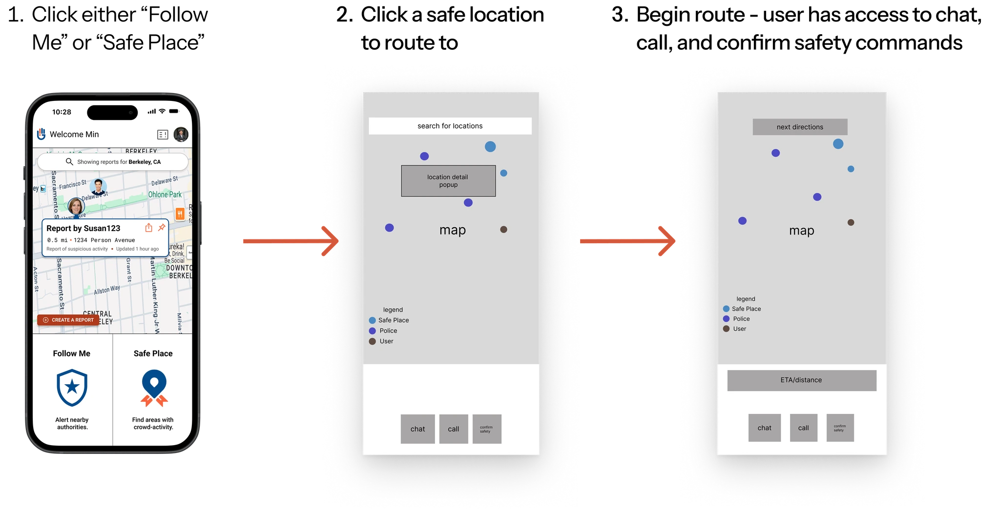
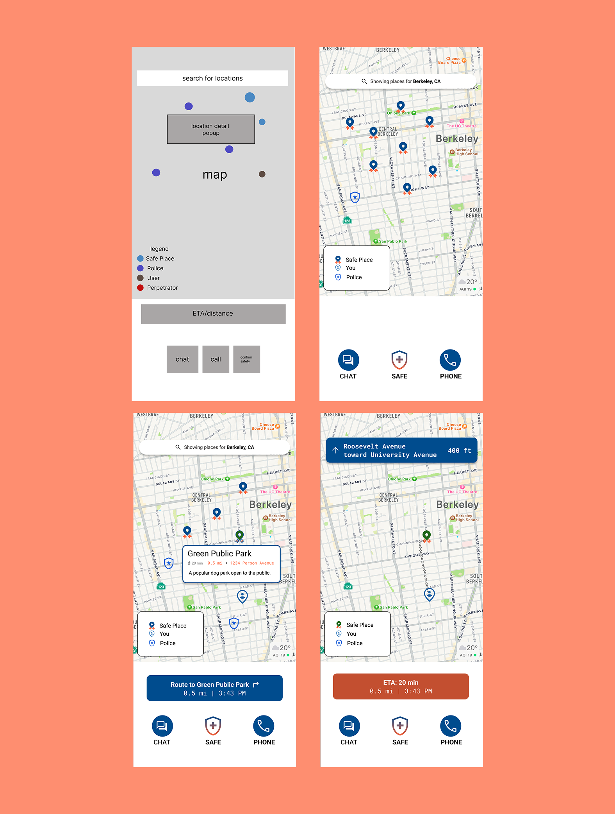
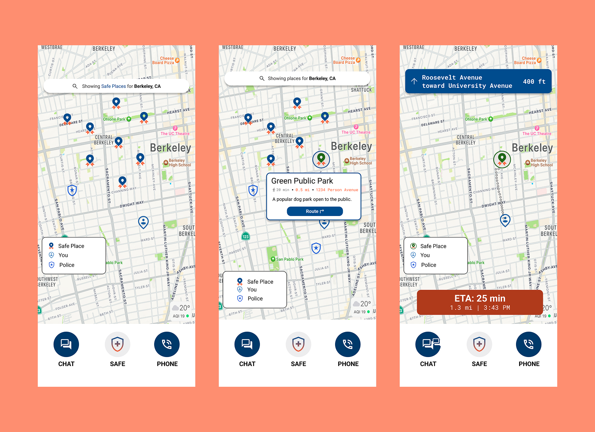
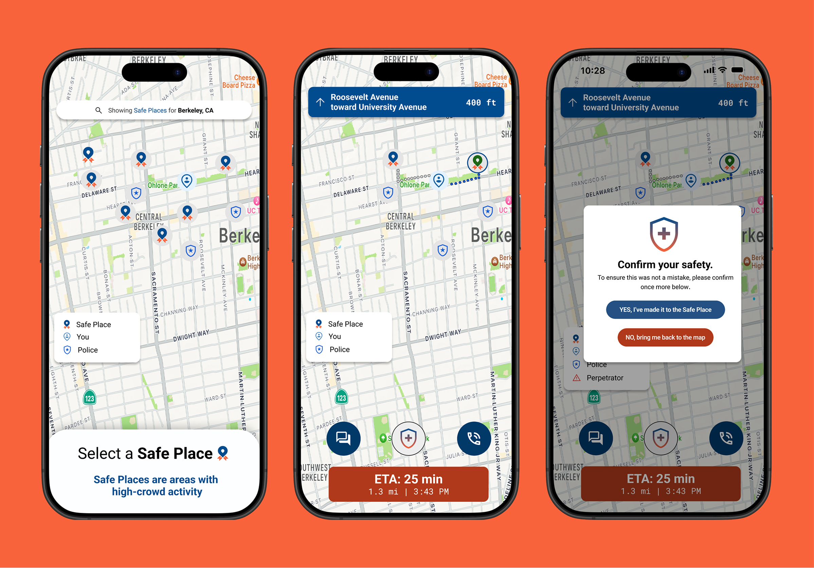
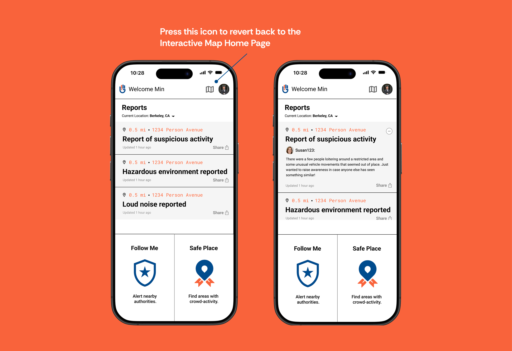
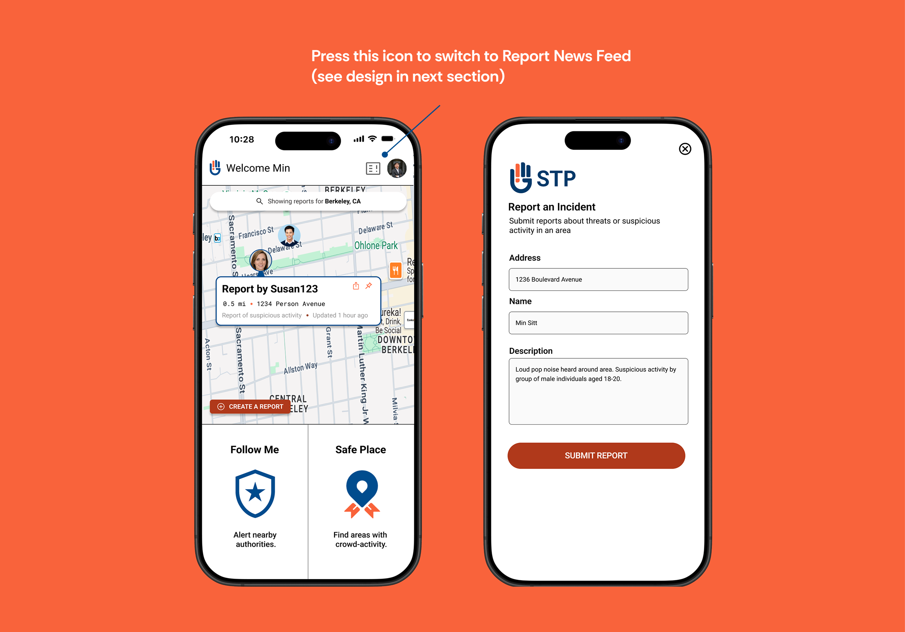

Case Study — 01
Designing for high-stake environments
How might we design an app that users can navigate safely and efficiently during high-pressure situations?

Project Overview
My Role
Sole UI/UX Designer responsible for all deliverables after regular manager review and refinements.
Company Context
Sexual-Traffic Prevention (STP) empowers individuals to take control of their safety by identifying secure locations, delivering real-time safety updates, and location tracking.
Problem
STP was created to solve the growing challenge of personal safety in unpredictable environments, where real-time information is often fragmented or inaccessible. The app would need to allow users to quickly and reliably seek safety in any situations they find themselves in.
Result
A fully interactive prototype was developed and sent to the client. The prototype helped the client secure additional funding, which in turn allowed Arrow North to establish another contract project for developing their web application.
Starting Point
The client first provided sketches of their initial vision for me to base my design around.
To begin the project, STP sent me a set of wireframes to base my design off of. In these wireframes were the two core features they wanted to implement—"Follow Me" & "Safe Place"—that would be the backbone of their product.
Below is a quick distinction between the two features. The icons are what I used to represent the features as you will see in the coming designs!
"Follow Me" Feature
Track user's location as they route to a selected safe location.
"Safe Place" Feature
Look for areas with high crowd activity that are near the user's location.
With minimal documentation and only the core concept provided, I embraced the challenge of fleshing these wireframes into a fully-fledged product!
Research & Use Cases
I used early wireframes to map out real-world use cases and define what STP needed to solve.
While the project's financial constraints limited the ability to conduct extensive user research, I created realistic user scenarios to guide my design—focusing on situations where someone would turn to STP for support. Based on the wireframes, I came up with several use cases for STP with a couple of them below:
- User is walking alone at night and notices that someone is following them.
- User witnesses a violent incident and wants to report details safely and quickly.
- User is in an unfamiliar area and wants to check where the safe zones nearest to them are.
From these scenarios, it was clear that the users of STP are likely in heightened emotional states where fear and urgency influence their interactions.
From there, I formed my guiding "how might we" question to design:
How might we ensure STP empowers users to find safety quickly when they need it most?
User Journey
With the problem defined, I developed a user experience map to outline how users would interact with STP's key features.
The user journey map was expanded upon the initial documentation by fleshing out interactions within the "Follow Me" and "Safe Place" features, as well as the "Report" system for users to report incidents. This also allowed me to present to the client what options the user has at any specific point in the app they may find themselves in. For instance, when a user is in "Follow Me" or "Safe Place", the journey shows they can call or chat with emergency contacts as they are routing for additional reassurance.
By developing this user journey, I ensured that the client and I were aligned on our vision for STP. After getting approval, I went ahead into creating high-fidelity wireframes.
Homepage Iterations
Starting with the home page, I went through several iterations…
I experimented with multiple homepage layouts, followed by further iterations on each one. I played around with different versions of how the "Report" system would be represented, horizontal versus vertical layouts, color, and sizing of specific elements. Below are a couple of the options I went through:
Option 1: News Feed Format
Reports are presented in a vertical news feed format.
Option 2: Interactive Map
An interactive map would showcase the reports made by other users in the area, that could then be clicked upon.
Option 3: Horizontal Layout
Reports are accessible through a horizontal scroll. Follow Me and Safe Place features would also be presented in a horizontal format and take up more space.
After reflection and discussions with the client, I decided to emphasize quick access to the "Follow Me" and "Safe Place" features, as they are the primary active safety tools for users. These features should occupy prominent space on the home page and be easily accessible to ensure users can engage them quickly.
This lead me to go forward with an iterated version of Option 2:
Why This Design?
- "Follow Me" & "Safe Place" Button Size & Accessibility: I took the decision to remove the nav bar in this design to create more space for the "Follow Me" & "Safe Place" buttons, which made them easy for the user to see in a high-pressure situation. This also made the buttons the lowest point they could be on the screen, allowing them to be within the thumb's natural reach—optimizing them for easy and quick tapability.
- Map Integration provided an informative overview of incidents in relation to the user: Users have a much easier time getting information on where crime & incidents are located in relation to them in the map as opposed to a newsfeed of articles. This version also provides the user a non-committal way (they wouldn't need to activate "Follow Me" or "Safe Place") to assess safety quickly.
- Typography Lift: The previous font felt robotic and difficult to read, so I switched to Roboto as it had less sharp edges for easier readability. I kept this change consistent for the rest of the screens, but the experimentation came in this home page, hence why I mention it here.
Feature Design
Keeping the guiding question in mind, I prioritized reliability and ease of use in the design of "Follow Me" & "Safe Place".
"Follow Me" and "Safe Place" are core features designed for when users feel under threat. Thus, my priority was to ensure they could take necessary actions in three clicks or fewer, allowing them to focus on their safety.
The three simple actions are: selecting "Follow Me" or "Safe Place," confirming a location, and initiating the route while authorities track their location.

The designs maintained this 3-click process, but also went through a couple of iterations before we landed on our final one.
Version 1: Map & Commands Sectioned Off
In the first iteration, I mimicked the initial wireframes I had for this concept, which was a map sectioned off at the bottom with the safety commands.

Version 2: Expanded Map
In the second iteration, I expanded the map to cover over half the screen, reserving the bottom for key functions (chat, call, confirm safety). I enlarged icons, added a background overlay for clarity, and refined typography to match the Home Page.

Version 3: Map Now Acquires the Whole Screen
My last explorations included fully expanding the map and placing the functional buttons in a side panel for a different perspective, and also a version with an instructional pop-up to help users conduct their next steps faster.
After several iterations and discussions with the client, I advocated for the map to take up as much screen as possible, as it serves as the core of the user experience: enabling users to easily adjust their routes, locate nearby safe places, and navigate seamlessly in real time.
This lead me to go forward with an iterated version of Version 3:

How did this design promote ease of access & reliability?
- Full Map Layout Provides Users With Greater Clarity and Control: A full-screen map provides users with a clear, uninterrupted view of their surroundings, allowing them to assess their environment, spot nearby safe zones—including those in the direction they're headed—and quickly adjust their route as needed. This visibility is essential for making fast, confident decisions in high-pressure situations.
- Clear Call-to-Action Instructions: The instructions at the top of the screen allow the user to know exactly what they need to do (Select a Safe Place) to quickly move onto the next step and get to safety.
- Confirmation Pop-ups Add A Layer of Security: This ensures the user doesn't make any accidental decisions about their current status, and that they will only do so once they are actually safe.
Report System
The final aspect of STP left to tackle was building a community-focused report system.
With the core features designed, the report system was the final element to address. Since we opted for an interactive homepage layout, a separate page needed to be created for the newsfeed-style report layout envisioned by the client. This approach aimed to make the system more community-focused, enabling users to engage and interact with one another to keep each other safe.
In Home Page Option 2, we incorporated a report feed accompanied by an image of the crime scene to serve as a visualization. However, the client indicated they might not have the technology to support this feature, so I made adjustments and developed the report system into the following design:
Final Version: Report Feed & Threads
Key information about the incident is presented and users can tap the specific incident to learn more about it.

Report Submission
Pressing the "Create Report" button on the Home Page will bring a series of prompts that the user can type in to note the details of any suspicious activity.

How did this design promote community?
- Building Shared Awareness Through Reporting: When users report suspicious activity, unsafe areas, or incidents, they contribute to a shared pool of real-time information that others in the area can benefit from. This fosters a sense of collective responsibility and vigilance.
- Enabling Localized, Context-Aware Safety: Reports reflect the on-the-ground reality in a specific area, making safety insights more personalized and accurate than broad institutional alerts.
Outcome
A 45+ screen prototype that strengthened client trust, secured funding, and opened the door to a web app contract.
I shipped STP a fully interactive prototype spanning 45+ screens. The client responded with enthusiastic feedback and used the designs to secure additional funding for their product.
The strength of that relationship led STP to bring Arrow North back for a follow-on contract — a web app designed to give administrators control over how the mobile app and its users operate. Being trusted to continue shaping the product across two separate engagements is a result I'm proud of.